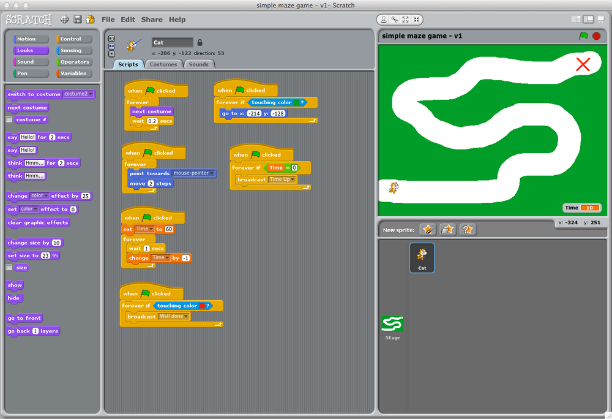

| Course Intro | This was the introduction to the course. It taught be the basics of what we will be doing this quadmester, how to use CS50 IDE, How to make a github account, etc. This was an essential part of the course as it brief me to what we would be doing and the attitude the course would take throughout the quadmester. (No Work in this unit.) |
| Computer Hardware | This was a prep unit that taught me the very basic parts of what a bit and a byte are and just other general compuer hardware related things. (No work done) |
| Computer Programming Lesson 0 | This unit was all about learning the basics of coding using scratch. It really helped me re-learn the fundementals and learning better habits while programming. My project in scratch was making a basic maze where you had to navigate a tunnel without touching the sides of the tunnel. (I lost the orginal image so this is just a related image)  |
| Computer Programming Lesson 1 | This was another invaluable lesson that really taught me the basics of C (a language i had no prior experience in) and really helped me get a new grasp on how differnent languages differ from one another and how you can learn from your mistakes. It also got into the depths of how C worked at a very low level which I thought was very interesting. Click here to see my code for the "Mario Less" project. |
| Computer Programming Lesson 2 | This lesson taught me about how to use arrays with C. This helped me later on in many projects as arrays are an invaluable part of C. While arrays on their own are fine, when used with some other C utilites, it makes arrays really shine. I really liked this lesson. Click here to see my code for the "Command Line Interaction" lab. | Computer Programming Lesson 3 | This was the algorithms unit. I found like one quite challenging and it really threw me some punches that I had to figure out. I spent much more times on the labs and actually attempted to learn more by doing actual research. I enjoyed this unit because in the end, I felt like i acomplished a lot. Click here to see my code for the "Bubble Sort" lab. |
| Computer Programming Lesson 4 | In this lesson, we learnt how memory allocation works and how to manage the memory in your programs. This was a very confusing unit. I had to really research and watch many youtube tutorials to really start to even understand the things I was doing. (unfortunately I stopped saving the code on my computer so I cant share any more code past lesson 3) |
| Computer Programming Lesson 6 | (For some reason we skipped 5) In this lesson, I learnt python. I found this quite funny because between my coding friend group, i am widely known as the person who isnt a big fan my python, to say the least. I usually prefer javascript and node as apposed to python, but I still gave it a shot. This was a very enjoyable lesson. |
| Computer Programming Lesson 7 | In this lesson we learnt how to use SQL and databases, change databases with python, etc. I usually dont have much of a use for databases but it was still an enjoyable lesson none the less. |
| Basic HTML Webpage | For this, we learnt how to make a HTML Webpage, use CSS, use bootstrap, etc. I really enjoyed this unit because I got to make a webpage in the first time in months, and it really helped refresh my knowledge on how HTML works and helped me remember the tags. I am even turning my HTML webpage project into a hosting page, in which you are reading this off of right now! |
| Git & Github | In this lesson, we learnt how to use Git & Github. Fortunately, I already used Git and Github on almost a daily basis so I knew lots before even getting into the unit. |